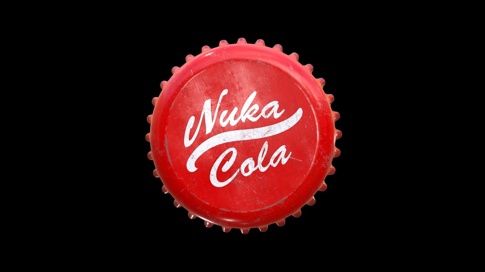

Nuka Cola Recipe

How to Make Classic Nuka Cola
Ingredients
- 1 16-ounce bottle cream soda
- 1 16-ounce bottle Coca-Cola
- 1 16-ounce bottle Mountain Dew, Mello Yello, or Sprite
Steps
- Measure Coca-Cola into a punch bowl. Pour a 16-ounce bottle of Coca-Cola into a punch bowl/serving pitcher. If you don't have Coca-Cola, substitute any cola flavored soft drink. Use chilled Coca-Cola to keep the drinks cold.
- You can easily double or triple this recipe as long as you keep the proportions the same. Just use a larger punch bowl.
- Add the Mountain Dew to the bowl. Pour a 16-ounce bottle of Mountain Dew, Mello Yello, or Sprite into the punch bowl/serving pitcher. Pour slowly to prevent the soda from fizzing up a lot.
- Pour in the cream soda and stir the Nuka Cola. Pour a 16-ounce bottle of cream soda into the the punch bowl/serving pitcher. Take a long spoon and slowly stir the mixture until the liquids are combined.
- Serve the Nuka Cola. Set out serving glasses so guests can help themselves to this fizzy drink. If you'd like to put the cola in bottles, use a funnel to pour in into the bottles and serve them before the Nuka Cola loses its carbonation.
- If you choose to bottle the Nuka Cola, consider setting out some old Nuka Cola Caps.